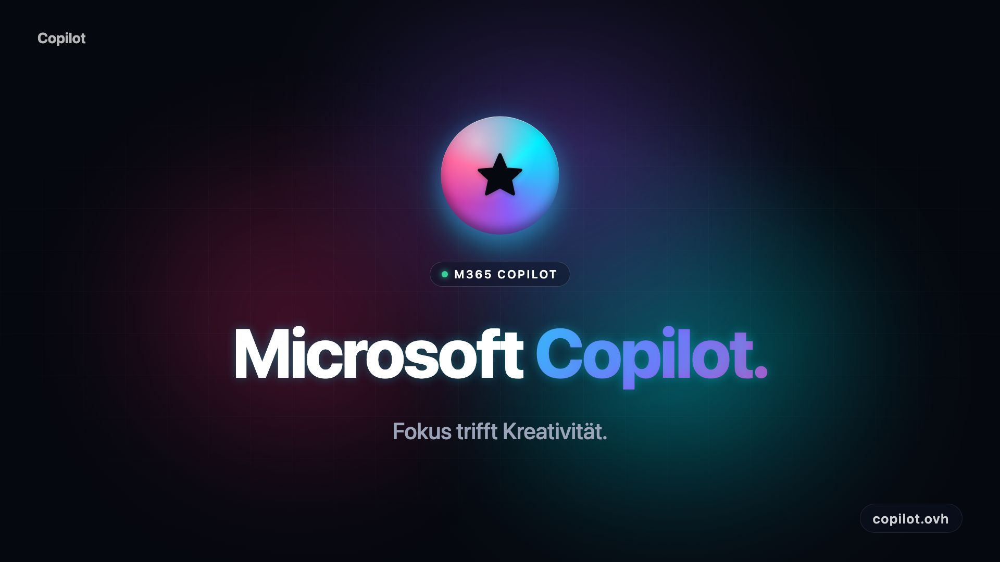

Context that understands
Copilot securely accesses your files, emails and chats – and delivers answers tailored to your goals. No copy-paste, no prompt engineering required.
Bundle ideas, accelerate workflows and keep your team in the flow – with an AI assistant that lives directly inside your Microsoft 365 apps.
Integrated with your Microsoft 365

Six building blocks that visibly lighten your daily workload while offering depth for complex projects.
Copilot securely accesses your files, emails and chats – and delivers answers tailored to your goals. No copy-paste, no prompt engineering required.
Notes become roadmaps. Backlogs become sprints.
Tone, length, language – adjusted with one click.
Word, Excel, PowerPoint, Outlook, Teams – Copilot lives where you already work. No context switch, no extra tab.
Data stays in your tenant. EU Data Boundary, RBAC, audit logs and Sensitivity Labels are honored.
Studies show: up to 29 % faster on recurring tasks, 70 % higher perceived productivity – validated across thousands of knowledge workers.
No installation, no months-long migration. Activate, connect, get going.
Add a Copilot license in the Microsoft 365 admin portal or start a trial – in less than two minutes.
Review permissions for files, mail and chats. Sensitivity Labels are inherited automatically.
In your Word doc, Excel sheet or Teams meeting: ask Copilot directly – in your language, in your context.
Real reports from pilot projects in mid-market and enterprise.
Copilot drafts our weekly reports in minutes – with correct numbers from SharePoint and Excel. The team gets three hours back every Friday.
Adoption is surprisingly high. Even colleagues who never touched AI now use the mail summarizer daily.
With custom agents in Copilot Studio we fully automated our onboarding process. ROI reached after eight weeks.
Got a different question? Drop us a line – we usually answer within one business day.
Start a 30-day trial today – no credit card, no risk. We'll help with the setup.
Start trial